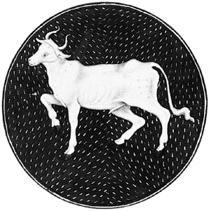

|

|
Taurus, (Latin: “Bull”) in astronomy, zodiacal
constellation lying in the northern sky between
Aries and Gemini, at about 4 hours 20 minutes
right ascension and 16° north declination. The
constellation’s brightest star, Aldebaran (Arabic
for “the follower”; also called Alpha Tauri), is the
14th brightest star in the sky, with a magnitude
of 0.85. The constellation also contains the Crab
Nebula (M1) and the Pleiades and Hyades star
clusters. In astrology, Taurus is the second sign
of the zodiac, considered as governing that
portion of the year from about April 20 to about
May 20. Its representation as a bull is related to
the Greek myth of Zeus, who assumed the form
of a bull to abduct Europa.
|